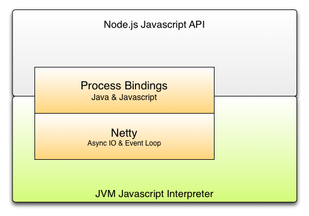

Process Bindings
How to do Node.js on the JVM
⦿
CodeMash 2015
project:odd

But Why?
“In four years ... Node.js has experienced phenomenal growth. Node.js is the language of choice for high performance, low latency applications and has been powering everything from robots to API engines to cloud stacks to mobile web sites.”Node.js Advisory Board - October 23, 2014
Language or Runtime?
-
document.addEventListener("DOMContentLoaded", function(event) { //do work }); -
if (!isFinite( someVar )) { // to infinity and beyond! } -
setTimeout(function() { // pomodoro complete! }, 1,500,000); -
var enc = "foo.asp?name=st%C3%A5le&car=saab"; var decoded = decodeURI(enc); -
console.log("To be or not to be");
Language or Runtime?
-
document.addEventListener("DOMContentLoaded", function(event) { //do work }); -
if (!isFinite( someVar )) { // to infinity and beyond! } -
setTimeout(function() { // pomodoro complete! }, 1,500,000); -
var enc = "foo.asp?name=st%C3%A5le&car=saab"; var decoded = decodeURI(enc); -
console.log("To be or not to be");
Language or Runtime
-
document.addEventListener("DOMContentLoaded", function(event) { //do work }); -
if (!isFinite( someVar )) { // to infinity and beyond! } -
setTimeout(function() { // pomodoro complete! }, 1,500,000); -
var enc = "foo.asp?name=st%C3%A5le&car=saab"; var decoded = decodeURI(enc); -
console.log("To be or not to be");
Node.js Architecture
V8 ECMAScript Engine
- Developed by Google
- Chrome and Node.js runtime
libuv
Asynchronous I/O & Event Loop
- File is ready for writing
- Socket has data ready for reading
- A timer has timed out
- A network server has bound to a port
Javascript API
User Code
var http = require('http');
http.createServer(function (req, res) {
res.writeHead(200, {'Content-Type': 'text/plain'});
res.end('Hello World\n');
}).listen(1337, '127.0.0.1');
console.log('Server running at http://127.0.0.1:1337/');
Node Process
src/node.js
(function(process) {
this.global = this;
function startup() {
var EventEmitter = NativeModule.require('events').EventEmitter;
process.__proto__ = Object.create(EventEmitter.prototype, {
constructor: {
value: process.constructor
}
});
EventEmitter.call(process);
process.EventEmitter = EventEmitter; // process.EventEmitter is deprecated
// etc...
});
Node.js main function takes a process object
Process Bindings
src/node.cc
void SetupProcessObject(Environment* env,
int argc,
const char* const* argv,
int exec_argc,
const char* const* exec_argv) {
Local<Object> process = env->process_object();
// process.version
READONLY_PROPERTY(process,
"version",
FIXED_ONE_BYTE_STRING(env->isolate(), NODE_VERSION));
// process.binding
NODE_SET_METHOD(process, "binding", Binding);
}
The process object is created in C++ using the V8 API
Some native properties are bound to the object here
V8 Binding
src/node.cc
static void Binding(const FunctionCallbackInfo<Value>& args) {
HandleScope handle_scope(args.GetIsolate());
Environment* env = Environment::GetCurrent(args.GetIsolate());
Local<String> module = args[0]->ToString();
node::Utf8Value module_v(module);
Local<Object> cache = env->binding_cache_object();
Local<Object> exports;
if (cache->Has(module)) {
exports = cache->Get(module)->ToObject();
args.GetReturnValue().Set(exports);
return;
}
// etc.
}Similar to a Javascript module lookup, but with native exports
Loading Node.js in V8
src/node.cc
void Load(Environment* env) {
// Compile, execute the src/node.js file. The node.js file returns a function 'f'
Local<String> script_name = FIXED_ONE_BYTE_STRING(env->isolate(), "node.js");
Local<Value> f_value = ExecuteString(env, MainSource(env), script_name);
Local<Function> f = Local<Function>::Cast(f_value);
// Now we call 'f' with the 'process' variable that we've built up with
// all our bindings. Inside node.js we'll take care of assigning things to
// their places.
Local<Object> global = env->context()->Global();
Local<Value> arg = env->process_object();
f->Call(global, 1, &arg);
}Node.js V8 layer loads lib/node.js providing a process object
process.binding()
lib/fs.js
var binding = process.binding('fs');
fs.exists = function(path, callback) {
if (!nullCheck(path, cb)) return;
binding.stat(pathModule._makeLong(path), cb);
function cb(err, stats) {
if (callback) callback(err ? false : true);
}
};The binding object does the heavy lifting
Bound Functions & Properties
src/node_file.cpp
NODE_SET_METHOD(target, "stat", Stat);
static void Stat(const FunctionCallbackInfo<Value>& args) {
Environment* env = Environment::GetCurrent(args.GetIsolate());
HandleScope scope(env->isolate());
if (args.Length() < 1)
return TYPE_ERROR("path required");
if (!args[0]->IsString())
return TYPE_ERROR("path must be a string");
// etc..
}
Node.js Architecture
Nodyn Architecture
Developed by project odd at Red Hat.
Apache 2.0 License
Javascript / Java Interop
nodyn/bindings/os.js
// Called by Node's os module.
// Node has no idea and does not care that a Java method
// is used to obtain and return the results.
exports.getTotalMem = function() {
return java.lang.Runtime.getRuntime().totalMemory();
}; Unlike V8, the JS runtimes on the JVM provide direct access to native objects
Netty
http://netty.ioAsynchronous I/O & Event Loop
Javascript API
User Code - Unchanged
var http = require('http');
http.createServer(function (req, res) {
res.writeHead(200, {'Content-Type': 'text/plain'});
res.end('Hello World\n');
}).listen(1337, '127.0.0.1');
console.log('Server running at http://127.0.0.1:1337/');
Node Process
src/node.js - Unchanged
(function(process) {
this.global = this;
function startup() {
var EventEmitter = NativeModule.require('events').EventEmitter;
process.__proto__ = Object.create(EventEmitter.prototype, {
constructor: {
value: process.constructor
}
});
EventEmitter.call(process);
process.EventEmitter = EventEmitter; // process.EventEmitter is deprecated
// etc...
});
Node.js main function takes a JS/Java process object
Loading Node.js in Nodyn
DynJSRuntime.java
protected static final String NODE_JS = "node.js";
protected static final String PROCESS = "nodyn/process.js";
public NodeProcess initialize() {
NodeProcess javaProcess = new NodeProcess(this);
getEventLoop().setProcess(javaProcess);
DynJS runtime = new DynJS(config);
JSObject global = runtime.getGlobalContext().getObject();
ExecutionContext context = runtime.getDefaultExecutionContext();
JSFunction processFunction = (JSFunction) runScript(PROCESS);
context.call(processFunction, global, javaProcess);
JSFunction nodeFunction = (JSFunction) runScript(NODE_JS);
context.call(nodeFunction, global, javaProcess);
return javaProcess;
}
Process Bindings
NodeProcess.java
public Object binding(String name) {
Object binding = this.bindings.get(name);
if (binding == null) {
binding = loadBinding(name);
this.bindings.put(name, binding);
}
return binding;
}Process Bindings (Continued)
DynJSRuntime.java
@Override
public Object loadBinding(String name) {
try {
this.runner.withSource("__native_require('nodyn/bindings/" + name + "');");
return runner.execute();
} catch(Throwable t) {
this.handleThrowable(t);
}
return null;
}Bound Functions & Properties
nodyn/bindings/fs.js
binding.stat = function(path, callback) {
path = possiblyRelative(path);
function work() {
return buildStat(path, function(stat) { return posix.stat(path, stat); });
}
return executeWork(work.bind(this), callback, true);
};
JNR Posix
A lightweight cross-platform POSIX emulation layer for Java, written in Java and is part of the JNR project
process.binding()
lib/fs.js - Unchanged
var binding = process.binding('fs');
fs.exists = function(path, callback) {
if (!nullCheck(path, cb)) return;
// Now this node.js code is calling our Java/JS functions
binding.stat(pathModule._makeLong(path), cb);
function cb(err, stats) {
if (callback) callback(err ? false : true);
}
};Now this node.js code calls Javascript functions backed by Java
BAM
Pure Node.js Javascript running on the JVM
Conclusion

Resources
- Nodyn — http://nodyn.io
- DynJS — http://dynjs.org
- Node — http://nodejs.org
- http://lanceball.com/process-bindings